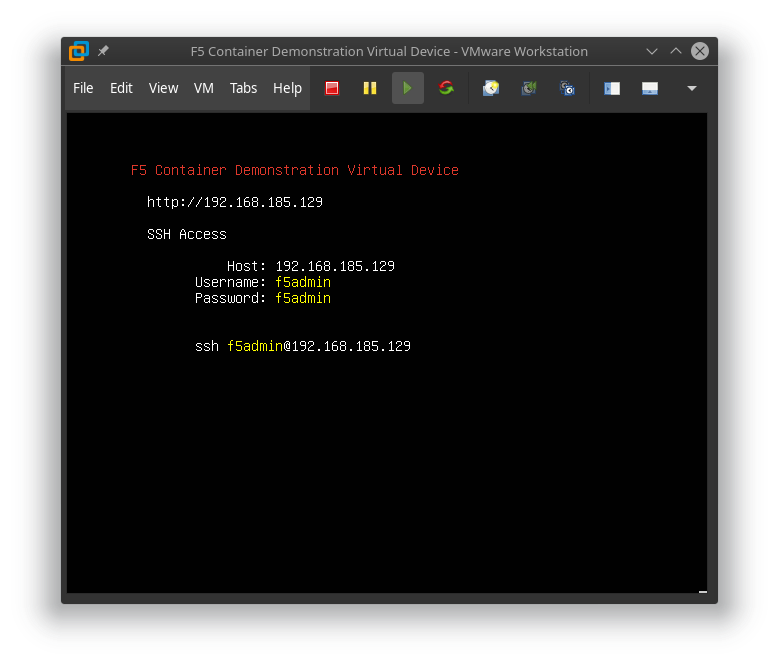

F5 now offers two container based solutions to aid in the orchestrated provisioning of BIG-IP services.
The API Service Gateway Container is a docker built container which runs both the iControl REST framework (restjavad) and the iControlLX extension framework (restnoded).
The API Services Gateway container allows for the installation and operation of iControlLX extensions outside of a BIG-IP. This enables opportunities for F5, or our customers and partners who are familiar with the iControlLX extensions framework, to run complex iControl REST orchestration workflows in a container, rather then consuming resources on their BIG-IP's control planes.
In addition to housing iControlLX extensions, the API Services Gateway's exposes REST endpoints which can be used to create trusted device groups. These device groups, which exist solely in the container, establishes a trust between the container and remote BIG-IP devices. Local iControlLX extensions in a trusted container can make iControl REST requests to peer BIG-IP devices without providing credentials.
Typically iControl REST requires the establishment of a disticnt session token with each device. The aquistion of the token requires knowledge of a username and password which is valid on the remote BIG-IP device. This at times has lead to 'leaking' BIG-IP credentials to tenant processes which could inturn access the XUI GUI or make remote iControl REST calls directly to the device.
With the API Services Gateweay, trusted REST calls are signed by the container and the signature is validated on the remote target BIG-IP. If the signature is issued from a member of our trusted device group, the request is carried out with Administrator role permissions on the remote BIG-IP. This is the same security and process used to synchronize configurations between peer TMOS devices. The API Service Gateway premits a division of labor where, once a BIG-IP administration process creates the device trust with BIG-IP credentials, subsequent processes running within the container can make trusted iControl REST requests without being concerned with BIG-IP sercurity. This confines the requirement for BIG-IP credentials to only the API Service Gateway, and then only for the processes of creating the device trust group.
The API Services Gateway container is not a generalized API security proxy. It is simply a way of extending our integration options in a cloud native way.
In fact, utilizing the API Services Gateway container to establish trusts removes the need for F5 security on each iControl REST call to remote BIG-IPs. When the F5 security is removed from individual requests, third party security can be used to enforce proper access controls to provision BIG-IP services. Securing access to API endpoints is a major role typically already present in service ecosystems. The API Services Gateway increases the ease of integration for provisioning F5 services to an ecosystem, but then relies on the ecosystem's native security to authorize requests made to the gateway container.
Note: The iControlLX extension framework is purpose built to service the orchestration of iControl REST calls issued to TMOS devices. It is NOT suitable as a generalized middleware framework. The iControlLX extension framework filters inbound requests in ways that make it impossible to implement common web services based middleware schemes; such as the injection of identity tokens or anti-tampering measures. The intention of the iControlLX extension framework is to interact with TMOS deviecs, not external systems. The API Services Gateway container is intended to be used with other linked containers which facilitate interaction with external services as part of a micro-services deployment.
The API Services Gateway container is available with community support. As the intention of the container is to become F5's component in a ecosystem of deployed services, the supportability of the complete orchestration would naturally be beyond F5's scope. We only handle our part of the overall orchestration.

The AS3 Container is an F5 optimized API Service Gateway which has the AS3 iControlLX extension pre-installed.
The AS3 Container does not utilize device group trusts. F5 device level authentication and authorization for iControl REST calls to remote BIG-IP devices is still enforced by each BIG-IP device. The credentials for remote target AS3 deployments are included in the tenant declarations posted to the AS3 container.
The AS3 container is only intended to support the pre-installed AS3 iControlLX extension. The customer should not expect to extend or alter the AS3 container in any way. You run it and use it.
Because the AS3 container's functionality stands alone, without any dependencies on the customer's ecosystem of services, it can be maintained as a fully supported F5 product.

For the most part, we have successfully migrated our customers and partners who are interested in orchestration to iControl REST. Why introduce new APIs for BIG-IP?
As BIG-IP administration increasingly becomes the job of automation, rather than human administrator interaction, focusing our efforts on simple declarative API interfaces will help our customers standardize their BIG-IP services, increases the agility of operations, and open the orchestration of the TMOS platform to a much larger ecosystem of external cloud services.
For human administrator's, F5 has augmented the ease of use of TMOS devices in many ways. The XUI Web Graphical Interface performs complex provisioning workflows in behalf of the administrator. The TMSH CLI client uses smart tab completion to assist the administrator with available options for provisioning tasks.

The complexities of remote provisioning BIG-IP services through iControl REST APIs has been a major hurdle for our customers in their efforts to automated. In our traditional 'programmable' fashion, F5 introduced a scriptable framework allowing BIG-IP experts to take very complex provisioning interactions, or workflows, and expose them to non-F5 expert API tenants in a simplified way. The scripting language chosen was javascript. The APIs are made available as URL namespace extensions to the existing iControl REST URL schemas.
/mgmt/shared/{{simplified API namespace}}The interaction of the scripted workflows with the existing iControl REST API is handled through a set of javascript objects. These objects were called the iControlLX extension framework. In addition, web based UI extensions were enabled, called iAppsLX, allowing the F5 experts to define custom UI elements which can be accessed as part of the BIG-IP device's XUI web graphical interface.
iControlLX Documentation is part of the clouddocs.f5.com effort.
As APIs access is the mechanism used in orchestrations, we will not discuss iAppsLX graphical presentations.
Just because a framework exists, like iControlLX extensions, does not mean that the API endpoints exposed by that framework are easy to use. To that end, F5 began to follow a trend in orchestrated provisioning known as 'declarative interfaces'. In general, declarative interfaces no longer require the end user to understand the stages and processes by which a system achieves a deployment, but rather simply defines the end service state of a system.
Here is a an example of a YAML declarative deployment for a containerized proxy using the Kubernetes orchestrator.
apiVersion: apps/v1
kind: Deployment
metadata:
name: nginx-deployment
labels:
app: nginx
spec:
replicas: 3
selector:
matchLabels:
app: nginx
template:
metadata:
labels:
app: nginx
spec:
containers:
- name: nginx
image: nginx:1.7.9
ports:
- containerPort: 80Notice there is nothing in the YAML declaration which pertains to the steps to take in the proxy's configuration or entries in configuration files. The point of the declarative interface is to decouple and free the API tenant from any such concerns. This notion of decoupling is known as 'separation of concerns' and is a basic concept in cloud ready deployments. In cloud, you decompose your systems into independent service interfaces which are only concerned about their part of the overall solution. As as system decomposes into smaller and smaller chunks of system functionality, these decomposed interfaces are referred to as 'micro services'.
Application Services 3 Extension (AS3) is the first supported declarative API for BIG-IP. AS3 endeavors to expose many advanced BIG-IP services while still hiding as many of the 'BIG-IP concerns' as possible. AS3 is an iControlLX extension which, once installed on a system supporting the iControlLX framework, can be accessed at the iControl REST endpoint:
/mgmt/shared/appsvcsApplication Services 3 Extension Documentation is part of the clouddocs.f5.com effort.
The AS3 iControlLX extension endpoint accepts a declaration defined by a standards based JSON schema. AS3 JSON schema allows for an entire BIG-IP's data plane services to be deployed through one declaration, in one REST call. The AS3 JSON schema includes the ability to define multiple tenants. We call the divisions tenants, verses the BIG-IP concept of partitions, because the API user should not be concerned that BIG-IP has partitions. In cloud, these divisions are typically defined as tenants, not partitions. In fact, if BIG-IP stopped supporting separations with partitions, the API definition of a tenant could remain unchanged. We are quite careful when we define the schema of our declarative APIs to make sure the concepts can be preserved as we pivot to our next generation of application delivery products.

AS3's is constantly being enhanced to include declaration attributes which enable more BIG-IP services. AS3's aggressive agile based development cycle allows for the release of new AS3 versions on a much shorter release cycle than a full TMOS release. The development team demonstrates and tests new functionality for AS3 every two weeks.
Other declarative iControlLX extensions are being developed to simplify additional complex TMOS tasks. As an example, AS3 performs extensive validation before implementing its workflows. There are times where AS3's design might not lend itself to the frequency of automation requests possible in an given ecosystem. For such situations, other declarative APIs could work with AS3 to allow for rapid interaction with specific BIG-IP service objects.
As another example, AS3 does not handle any system-wide onboarding tasks. Other declarative APIs are being developed to handle those type of orchestration requests.
When complex orchestration tasks can be built into standalone micro services, supported containers, like the AS3 container, can become the release packaging. The AS3 container is an example of a standalone micro service just for AS3. Another example of a proposed standalone micro service we are considering, is a container build which unifies the creation and auto-scaling of TMOS VEs in multiple cloud environments. The intent for all such future standalone container builds is to provide simple 'run and then use' orchestrations.
All of our declarative APIs and micro service container builds follow the same aggressive development process. Our aim is to be able to provide the simplicity necessary for F5 services to function well in orchestrated environments at the agile pass of our customer's cloud native deployments.
When declarative iControlLX services are deployed on existing TMOS platforms, they inherit TMOS' system level services, including network access, authentication services, and defined role based authorization. This works well where existing TMOS configurations for corporate identity, like active directory, and network access systems, like established network firewall policies, are already available. However, TMOS' lack of support for cloud native identity systems, TMOS' notions of roles, and the inflexibility of TMOs' tenancy model make integration in the increasingly opinionated world of cloud orchestation extremely cumbersome.

When TMOS forces the exposure of BIG-IP concepts to cloud service API tenants, we are not properly observing 'separation of concerns' for our customers. The cloud won't change for F5, F5 needs to change for the cloud.
In the past F5 has tried to accommodate specific partner ecosystem deployments, for example Cisco APIC or OpenStack Neutron. We did this by creating dedicated agent processes which work inside of the partner's controllers to translate requests into the workflows needed to provision BIG-IPs. Partner feature dependencies and multiple version testing have proven extremely fragile and complex to maintain. Fortunately, the technology world had the same problem we did, that of supporting the lifecycle of their sofrware in the diversity of cloud services. A better way to handle software deployments in complex ecosystems based on process virtualization has take over our industry. Containerization!
What can F5 do to enable deep integration now that ubiquitous containerization has become available in our customer's environments?
We create our own containers which hides as many of the complexities of integrating with TMOS platforms as possible. That is the reason for the generalized API Service Gateway Container. The API Service Gateway container can be integrated into micro service based controllers in ways that make orchestrated provisioning of TMOS devices appear native to the customer's services. Because of containerization, we can combine the simplicity of our new iControlLX extension declarative APIs with partner ecosystems services without forcing a costly and fragile deployment of one-off, ecosystem specific F5 agents.
The marriage of housing our declarative iControlLX extensions and the ability to establish trusted communications with remote BIG-IPs make the API Services Gateway the basis for building F5's components within an ecosystem's orchestrated deployment of containers.
Note: The API Services Gateway is never intended to be the workflow engine at the heart of a deep ecosystem integration. The F5 frameworks it contains are simply not flexible enough to support that functionality. It is intended to remove 'TMOS concerns' from the other elements in a deep ecosystem integration project. Interactions with other services in an ecosystems should be handled by other containerized elements which isolate the concerns of those services. In micro-services, cloud ready, fashion, each element plays their role and only their role.
If a customer wants a graphical user interface to manage BIG-IP devices, BIG-IQ provides that interface.
If a customer wants the ease of use declarative APIs for BIG-IP services available on an F5 managed platform, BIG-IQ 6.1 adds AS3 API endpoints for BIG-IQ managed devices. BIG-IQ will deploy AS3 on remote BIG-IPs and will apply analytics to AS3 declared services.
If a customer wants a standalone way to provision BIG-IP services through a declarative API, the AS3 container performs that function.
If a customer or partner needs deep integration of BIG-IPs services into an ecosystem of cloud services, the API Service Gateway provides the basis for F5's components of such a solution.
| F5 Solution | Support Model | Usage |
|---|---|---|
| F5 BIG-IQ | Full | Full Device Management with a Graphical Environment |
| F5 BIG-IQ with AS3 | Full | Full Device Management with the Ease of Use Declarative API |
| F5 AS3 Container | Full | Ease of Use Declarative API as a Stand Alone Micro Service |
| F5 API Services Gateway | Community | F5's Components of an Integration into an Cloud Services Ecosystem |
We will deploy the AS3 Container and then declare a BIG-IP device configuration.
In these exercises you will need:

dockerStep 1. Create a SSH connection to the F5 Container Demonstration Virtual Device
You can Obtain the IP address of your booted F5 Container Demonstration Virtual Device by opening its console.

In this example, the IP address would be 192.168.185.129. Your address will likely be different.
If the Host entry IP address is blank, please assure your network interface is properly conntected to a network.
Fill in the form below to create your cut-n-paste examples for these exercises.
| Attribute | Explaination |
|---|---|
| deviceIP | The F5 Container Demonstration Virtual Device IP Address |
| targetHost | The iControl REST remote BIG-IP host, reachable from the container |
| targetUsername | The iControl REST username on the remote BIG-IP |
| targetPaaphrase | The iControl REST password on the remote BIG-IP |
Start your ssh client and login with the username, password, and host shown on the console.
ssh f5admin@[Your F5 Container Demonstration Device IP]
f5admin@[Your F5 Container Demonstration Device IP]
f5admin@[Your F5 Container Demonstration Device IP]'s password: f5adminWelcome to F5 Container Demo Virtual Device (GNU/Linux 4.15.0-36-generic x86_64)
Running Containers:
CONTAINER ID IMAGE COMMAND CREATED STATUS PORTS NAMES
Last login: Sat Sept 1 09:32:55 2018 from 172.16.27.1
f5admin@containerhost:~$
Step 2. Pull the AS3 Container from Dockerhub
docker pull f5devcentral/f5-as3-container
f5admin@containerhost:~$ docker pull f5devcentral/f5-as3-container
Using default tag: latest
latest: Pulling from f5devcentral/f5-as3-container
911c6d0c7995: Pulling fs layer
....
....
6ce7b086198f: Pull complete
Digest: sha256:9ccf5a8e18699742440ea50b9023a9728987d04da4710869e8964d36bcf1d552
Status: Downloaded newer image for f5devcentral/f5-as3-container:latest
Step 3. Create a running instance of the AS3 Container
docker run --name as3_container --rm -d -p 8443:443 -p 8080:80 f5devcentral/f5-as3-container:latest
f5admin@containerhost:~$ docker run --name as3_container --rm -d -p 8443:443 -p 8080:80 f5devcentral/f5-as3-container:latest
478d06836ee38fdd48f89e267d7b91c9d3bfb9538c0602e3fdb444062e2f3e54List the running containers.
docker ps
f5admin@containerhost:~$ docker ps
CONTAINER ID IMAGE COMMAND CREATED STATUS PORTS NAMES
478d06836ee3 f5devcentral/f5-as3-container:latest "/etc/runit/boot" 8 seconds ago Up 7 seconds 0.0.0.0:8080->80/tcp, 0.0.0.0:8443->443/tcp as3_container
Step 1. Vaidate the version of the AS3 iControl Extension in the AS3 Container
Issue an iControl REST GET request to the AS3 Container with URL ```/mgmt/shared/appsvcs/info``
Use curl in the F5 Container Demonstration Device SSH session
f5admin@containerhost:~$ curl -k -s https://localhost:8443/mgmt/shared/appsvcs/info|json_pp
{
"schemaMinimum" : "3.0.0",
"release" : "3",
"version" : "3.5.0",
"schemaCurrent" : "3.5.0"
}You should see a returned JSON object which shows the version of the AS3 iControlLX Extension which was pre-installed in the AS3 Container.
Note: While the iControl REST endpoint is on the AS3 Container, our desire is to make AS3 declarations against remote BIG-IP hosts. Creating a remote configuration for an AS3 declaration is done by including 3 additional attributes. The presence of the targetHost, targetUsername, targetPassphrase attributes in the declaration informs the AS3 iControlLX extension that is should not issue iControl REST requests to localhost, but should authenticate and issue iControl REST requests to the targetHost. We will be including these attributes in all our requests to the AS3 Container endpoint.
Note: Since declaration attributes are required to target remote BIG-IPs, we won't be able to make HTTP GET or DELETE requests, which by RFC can not contain a request body, for any remote declarations. You can query the version from the iControlLX extension with a GET request, but any requests to manage a declaration on a remote BIG-IP must use POST or PATCH methods.
Step 2. Get any existing AS3 declaration on a remote BIG-IP
Use curl in the F5 Container Demonstration Device SSH session
f5admin@containerhost:~$ curl -k -s -H 'Content-Type: application/json' -X POST https://localhost:8443/mgmt/shared/appsvcs/declare -d '{
"class": "AS3",
"action": "retrieve",
"targetHost": "[Your targetHost]",
"targetUsername": "[Your targetUsername]",
"targetPassphrase": "[Your targetPassphrase]"
}'If you recieve no response output like this:
f5admin@containerhost:~$ curl -k -s -H 'Content-Type: application/json' -X POST https://localhost:8443/mgmt/shared/appsvcs/declare -d '{
"class": "AS3",
"action": "retrieve",
"targetHost": "[Your targetHost]",
"targetUsername": "[Your targetUsername]",
"targetPassphrase": "[Your targetPassphrase]"
}'|json_pp
f5admin@containerhost:~$ <-- Notice no response output!you likely don't have a previously deployed AS3 declaration. In fact if you add the --version flag to your curl command, you will see you got a 204 response.
NOTE: AS3 Container POST requests with defined targetHost and actions attributes do not always mirror the responses of an AS3 iControlLX extension installed on a BIG-IP. This is important to note when writing tests. You will want to validate your requests against the AS3 container, not just AS3 iControlLX extensions installed locally on BIG-IPs.
As an example, assuming you have the AS3 iControlLX extension installed on your remote BIG-IP, when you place both the POST and GET requests to /mgmt/shared/appsvcs/declare without a deployed declaration you'll get 404 responses, not the 204 response returned from the AS3 Container.
Note the response issuing a POST request and the retrieve action on AS3 installed on your remote BIG-IP:
f5admin@containerhost:~$ curl -u 'admin:admin' -k -s -H 'Content-Type: application/json' -X POST https://[Your targetHost]/mgmt/shared/appsvcs/declare -d '{
> "class": "AS3",
> "action": "retrieve"
> }'|json_pp
{
"statusCode": 404,
"message": "declaration 0 not found",
"code": 404
}Note the response issuing a GET request on AS3 installed on your remote BIG-IP:
f5admin@containerhost:~$ curl -u 'admin:admin' -k -s -H 'Content-Type: application/json' https://[Your targetHost]/mgmt/shared/appsvcs/declare|json_pp
{
"statusCode": 404,
"message": "declaration 0 not found",
"code": 404
}Step 3. Issue an AS3 declaration to the a remote BIG-IP
Issue the sample declaration from the AS3 clouddocs documentation to the AS3 Container endpoint. We will add the targetHost, targetUsername, and targetPassphrase attributes in the declaration, thus deploying the declaration to your remote BIG-IP.
Use curl in the F5 Container Demonstration Device SSH session
iControlLX extension resources are create in the AS3 Container and then a series of iControl REST requests are issued to the target host BIG-IP to provision the services declared. The declaration is maintained in the AS3 Container, the declared state is implemented on the remote BIG-IP.
Here is what the result should look like.
f5admin@containerhost:~$ curl -k -s -H 'Content-Type: application/json' -X POST https://localhost:8443/mgmt/shared/appsvcs/declare -d '{
"class": "AS3",
"action": "deploy",
"targetHost": "[Your targetHost]",
"targetUsername": "[Your targetUsername]",
"targetPassphrase": "[Your targetPassphrase]"
"declaration": {
"class": "ADC",
"schemaVersion": "3.0.0",
"id": "container",
"label": "Sample 1 in a container",
"remark": "Simple HTTP application with RR pool",
"Sample_container": {
"class": "Tenant",
"A1": {
"class": "Application",
"template": "http",
"serviceMain": {
"class": "Service_HTTP",
"virtualAddresses": [
"10.0.1.10"
],
"pool": "web_pool"
},
"web_pool": {
"class": "Pool",
"monitors": [
"http"
],
"members": [{
"servicePort": 80,
"serverAddresses": [
"192.0.1.10",
"192.0.1.11"
]
}]
}
}
}
}
}'|json_pp
{
"results": [{
"message": "success",
"lineCount": 24,
"code": 200,
"host": "[Your targetHost]",
"tenant": "Sample_container",
"runTime": 1077
}],
"declaration": {
"class": "ADC",
"schemaVersion": "3.0.0",
"id": "container",
"label": "Sample 1 in a container",
"remark": "Simple HTTP application with RR pool",
"Sample_container": {
"class": "Tenant",
"A1": {
"class": "Application",
"template": "http",
"serviceMain": {
"class": "Service_HTTP",
"virtualAddresses": ["10.0.1.10"],
"pool": "web_pool"
},
"web_pool": {
"class": "Pool",
"monitors": ["http"],
"members": [{
"servicePort": 80,
"serverAddresses": ["192.0.1.10", "192.0.1.11"]
}]
}
}
},
"controls": {
"archiveTimestamp": "2018-10-06T20:12:08.104Z"
}
}
}
f5admin@containerhost:~$The same declaration can be issued to multiple remote BIG-IP hosts by changing the targetHost, targetUsername, and targetPassphrase attributes and issuing the same request to the AS3 Container.
Step 4. Remove an AS3 declaration from a remote BIG-IP
To remove our deployed declaration from our remote BIG-IP, issue a POST request with the remove action to the AS3 Container. We will include our targetHost, targetUsername, and targetPassphrase attributes to remove the declaration from the correct remote BIG-IP.
Use curl in the F5 Container Demonstration Device SSH session
f5admin@containerhost:~$ curl -k -s -H 'Content-Type: application/json' -X POST https://localhost:8443/mgmt/shared/appsvcs/declare -d '{
"class": "AS3",
"action": "remove",
"targetHost": "[Your targetHost]",
"targetUsername": "[Your targetUsername]",
"targetPassphrase": "[Your targetPassphrase]"
}'|json_pp
{
"results": [
{
"message": "success",
"lineCount": 22,
"code": 200,
"host": "[Your targetHost]",
"tenant": "Sample_container",
"runTime": 21546
}
],
"declaration": {
"class": "ADC",
"schemaVersion": "3.0.0",
"id": "1538861091968",
"updateMode": "complete",
"controls": {
"archiveTimestamp": "2018-10-06T21:25:14.496Z"
}
}
}Step 5. Stop the AS3 Container
To stop the AS3 Container on our F5 Container Demonstration Virtual Device issue the following docker command.
docker stop as3_container
f5admin@containerhost:~$ docker stop as3_container We will go through a series of exercises which illustrate the uses of the API Service Gateway Container as a place to install and use iControlLX extensions and as a trusted gateway to remove BIG-IP concerns from a complex ecosystem integration.
In these exercises you will need:
dockerStep 1. Create a SSH connection to the F5 Container Demonstration Virtual Device
You can Obtain the IP address of your booted F5 Container Demonstration Virtual Device by opening its console.
In this example, the IP address would be 192.168.185.129. Your address will likely be different.
If the Host entry IP address is blank, please assure your network interface is properly conntected to a network.
Fill in the form below to create your cut-n-paste examples for these exercises.
| Attribute | Explaination |
|---|---|
| deviceIP | The F5 Container Demonstration Virtual Device IP Address |
| targetHost | The iControl REST remote BIG-IP host, reachable from the container |
| targetUsername | The iControl REST username on the remote BIG-IP |
| targetPaaphrase | The iControl REST password on the remote BIG-IP |
Start your ssh client and login with the username, password, and host shown on the console.
ssh f5admin@[Your F5 Container Demonstration Device IP]
f5admin@[Your F5 Container Demonstration Device IP]
f5admin@[Your F5 Container Demonstration Device IP]'s password: f5adminWelcome to F5 Container Demo Virtual Device (GNU/Linux 4.15.0-36-generic x86_64)
Running Containers:
CONTAINER ID IMAGE COMMAND CREATED STATUS PORTS NAMES
Last login: Sat Sept 1 09:32:55 2018 from 172.16.27.1
f5admin@containerhost:~$
Step 2. Pull the API Services Gateway Container from Dockerhub
docker pull f5devcentral/f5-api-services-gateway
f5admin@containerhost:~$ docker pull f5devcentral/f5-api-services-gateway
Using default tag: latest
latest: Pulling from f5devcentral/f5-api-services-gateway
911c6d0c7995: Already exists
9a55ca73fa67: Pulling fs layer
....
....
8ad0544354f6: Pull complete
Digest: sha256:6d425a974564940fb7a86bfd899d17999260cf16f839f9ab451b99ef38c68b7e
Status: Downloaded newer image for f5devcentral/f5-api-services-gateway:latestStep 3. Create a running instance of the API Services Gateway
docker run --name asg_container --rm -d -p 8443:443 -p 8080:80 f5devcentral/f5-api-services-gateway:latest
f5admin@containerhost:~$ docker run --name asg_container --rm -d -p 8443:443 -p 8080:80 f5devcentral/f5-api-services-gateway:latest
1c93dd6fa06e7f63df22953d0a0facb20635d7db74ca9a322f798fe3ff582119The main use case for the API Services Gateway is to add an container based service which decouples all the TMOS concerns from the rest of the orchestration services. One of the major concerns imposed by TMOS is its authentication and roles based authorizations. To remove those concerns we are going to create a device trust between the API Services Gateway and a remote BIG-IP.
In TMOS, the ability to issue trusted requests is contingent on a remote device being registered in a device group. We will start by
on the API Services Gateway.
Step 1. Query for existing device group trusts
Use curl in the F5 Container Demonstration Device SSH session
f5admin@containerhost:~$ curl -k -s -H 'Content-Type: application/json' https://localhost:8443/mgmt/shared/resolver/device-groups|json_pp
{
"items": [
{
"groupName": "dockerContainers",
"devicesReference": {
"link": "https://localhost/mgmt/shared/resolver/device-groups/dockerContainers/devices"
},
"description": "Docker Containers Group",
"displayName": "Docker Containers Group",
"isViewGroup": false,
"infrastructure": false,
"generation": 1,
"lastUpdateMicros": 1539009502371689,
"kind": "shared:resolver:device-groups:devicegroupstate",
"selfLink": "https://localhost/mgmt/shared/resolver/device-groups/dockerContainers"
},
{
"groupName": "dockerContainersLegacy116",
"devicesReference": {
"link": "https://localhost/mgmt/shared/resolver/device-groups/dockerContainersLegacy116/devices"
},
"description": "Docker Containers Group for legacy BIG-IP devices",
"displayName": "Docker Containers Group for legacy BIG-IP devices",
"isViewGroup": false,
"infrastructure": false,
"generation": 1,
"lastUpdateMicros": 1539009502371285,
"kind": "shared:resolver:device-groups:devicegroupstate",
"selfLink": "https://localhost/mgmt/shared/resolver/device-groups/dockerContainersLegacy116"
}
],
"generation": 2,
"kind": "shared:resolver:device-groups:devicegroupcollectionstate",
"lastUpdateMicros": 1539009502372133,
"selfLink": "https://localhost/mgmt/shared/resolver/device-groups"
}Note: The API Services Gateway automatically creates two device groups dockerContainers and dockerCOntainersLegacy116. In the API Services Gateway documentation is states that trusted devices can be added by populating the ENV (environment variable for docker) BIGIP_LIST. There is an iControlLX extension pre-installed on the API Services Gateway which will attempt to query and BIG-IP devices defined in the BIGIP_LIST environment variable. If the queried BIG-IP device is running TMOS v12 or higher, it will create a trust for the device by adding it to the dockerContainers device group. If the BIG-IP device is running TMOS v11.6, it will create a trust for the device by adding it to the dockerContainers116 device group. It is not recommended that you use the API Services Gateway with TMOS versions less then 13.0.
Note: Becuase trusted device requests use the same mechanisms associated with TMOS configuration synchronization, there is a limitation in TMOS which requires our remote BIG-IP device to have its configsync-ip interface populated with a non-floating SelfIP. You must at least create one non-floating SelfIP and then modify your TMOS device to set the configsync-ip to the non-floating SelfIP. While the trusted queries can be issued to your remote BIG-IP's management IP address, if your remote BIG-IP does not have its configsync-ip populated, it will not be able to discover its own device certificate, which is used to sign responses to your queries.
As our exercise is to teach you how to create you own device trusts, we will ignore the dockerContainers and dockerContainersLegacy116 device groups and create one of our own.
Step 2. Make a iControl REST POST request to add a tusted remote BIG-IP
We will add a device group call app1. You can call your device group any valid TMOS name.
Use curl in the F5 Container Demonstration Device SSH session
f5admin@containerhost:~$ curl -k -s -H 'Content-Type: application/json' -X POST https://localhost:8443/mgmt/shared/resolver/device-groups -d '{
"groupName": "app1",
"display": "API Gateway Trust Group",
"description": "API Gateway Trust Group"
}'|json_pp
{
"groupName": "app1",
"devicesReference": {
"link": "https://localhost/mgmt/shared/resolver/device-groups/app1/devices"
},
"description": "API Gateway Trust Group",
"isViewGroup": false,
"infrastructure": false,
"generation": 1,
"lastUpdateMicros": 1539011370204203,
"kind": "shared:resolver:device-groups:devicegroupstate",
"selfLink": "https://localhost/mgmt/shared/resolver/device-groups/app1"
}Note: The request to create the device group required no authentication or authorization. The API Services Gateway does not, by default, enforce any authentication model. This is relieve us from that concern. We will later mitigate this issue by securing access to the API Service Gateway to only our other trusted orchestration services. It is important to realize that removing concerns is a goal at this phase of our development process.
Step 3. Add our remote BIG-IP to our device group.
Use curl in the F5 Container Demonstration Device SSH session
f5admin@containerhost:~$ curl -k -s -H 'Content-Type: application/json' -X POST https://localhost:8443/mgmt/shared/resolver/device-groups/api1/devices -d '{
"userName": "admin",
"password": "admin",
"address": "172.13.1.103",
"httpsPort": "443"
}'|json_pp
{
"uuid": "c61e1394-250c-451d-a1c2-fc0f7d1fa99a",
"deviceUri": "https://172.13.1.103:443",
"machineId": "c61e1394-250c-451d-a1c2-fc0f7d1fa99a",
"state": "PENDING",
"address": "172.13.1.103",
"httpsPort": 443,
"groupName": "app1",
"generation": 1,
"lastUpdateMicros": 1539013176263467,
"kind": "shared:resolver:device-groups:restdeviceresolverdevicestate",
"selfLink": "https://localhost/mgmt/shared/resolver/device-groups/app1/devices/c61e1394-250c-451d-a1c2-fc0f7d1fa99a"
}Note: The response shows the state of our device addition as PENDING. At this point the API Services Gateway is initiating an exchange of device certificates with the remote BIG-IP. Remote BIG-IP credentials are only required to initiate or remove the trust. Once the devices exchange certificates, and device group membership is established, iControlLX extensions running on the API Services Gateway can issue iControl REST requests to trusted BIG-IPs without providing remote TMOS credentials or establishing an iControl REST session token.
Step 4. Query the status of the device trust to assure it is ACTIVE
Use curl in the F5 Container Demonstration Device SSH session
f5admin@containerhost:~$ curl -k -s -H 'Content-Type: application/json' https://localhost:8443/mgmt/shared/resolver/device-groups/api1/devices|json_pp
{
"items": [
{
"uuid": "adec4506-656f-4aee-a94a-2414ee63f3ec",
"deviceUri": "https://172.17.0.2:443",
"machineId": "adec4506-656f-4aee-a94a-2414ee63f3ec",
"state": "ACTIVE",
"address": "172.17.0.2",
"httpsPort": 443,
"groupName": "app1",
"generation": 1,
"lastUpdateMicros": 1539013176668106,
"kind": "shared:resolver:device-groups:restdeviceresolverdevicestate",
"selfLink": "https://localhost/mgmt/shared/resolver/device-groups/app1/devices/adec4506-656f-4aee-a94a-2414ee63f3ec"
},
{
"uuid": "c61e1394-250c-451d-a1c2-fc0f7d1fa99a",
"deviceUri": "https://172.13.1.103:443",
"machineId": "c61e1394-250c-451d-a1c2-fc0f7d1fa99a",
"state": "ACTIVE",
"address": "172.13.1.103",
"httpsPort": 443,
"hostname": "test-bigip1.sample.openstack.f5se.com",
"version": "13.1.1",
"product": "BIG-IP",
"platformMarketingName": "BIG-IP Virtual Edition",
"edition": "Final",
"build": "0.0.4",
"restFrameworkVersion": "13.1.1-0.0.4",
"managementAddress": "192.168.245.105",
"mcpDeviceName": "/Common/test-bigip1.novalocal",
"trustDomainGuid": "f419bf5b-d194-4c68-96c0fa163ee2381c",
"properties": {
"shared:resolver:device-groups:discoverer": "adec4506-656f-4aee-a94a-2414ee63f3ec"
},
"isClustered": false,
"isVirtual": true,
"groupName": "app1",
"generation": 3,
"lastUpdateMicros": 1539013178608469,
"kind": "shared:resolver:device-groups:restdeviceresolverdevicestate",
"selfLink": "https://localhost/mgmt/shared/resolver/device-groups/app1/devices/c61e1394-250c-451d-a1c2-fc0f7d1fa99a"
}
],
"generation": 4,
"kind": "shared:resolver:device-groups:devicegroupdevicecollectionstate",
"lastUpdateMicros": 1539013178610088,
"selfLink": "https://localhost/mgmt/shared/resolver/device-groups/app1/devices"
}Note: The response shows two devices in our device group. One is the API Services Gatway with a state of ACTIVE. The other is our remote BIG-IP, which should also show state ACTIVE. You can continue to add remote BIG-IPs to our device group, thus enabling iControlLX extensions installed on the API Service Gateway to have many remote BIG-IPs which can be have iControl REST requests made in a tusted fashion.
If your remote BIG-IP does not reach the ACTIVE state, you likely have one of two issues:
POST request to add the device.configsync-ip set to a non-floating SelfIP. Without this, the remote device can not discover its own certificate to exchange with the API Services Gateway.Fix these issues, remove the errant device by issue DELETE requests to the device link in the device group, and then re-populate the device entry in the device group by issuing a POST request providing the appropriate request body.
To utilize our established trust between the API Services Gateway and a BIG-IP, we need to issue iControl REST requests from the API Service Gateway. We are going to create a simple iControlLX extension which will proxy iControl REST by accepting POST requests. The body of our POST will contain the details of our desired iControl REST request to make to our trusted BIG-IP.

The key iControlLX component which enables us to issued signed requests for members of our trusted device group is the RestOperation eventChannel object class. There are two methods which enable the use of signed requests.
| RestOperation method | Explaination |
|---|---|
setIdentifiedDeviceRequest(boolean) |
if true, check if the host part of the requested URL matches a trusted device. If it does, create and inject the signed request header. Defaults to false. |
setIdentifiedDeviceGroupName(device_trust_group_name) |
(optional) Only check the host part of the URL against the named device group. Defaults to null which will check all device groups. |
TrustedProxy iControlLX extension code
"use strict";
/**
* Trusted Device Proxy which handles only POST requests
* @constructor
*/
class TrustedProxyWorker {
constructor() {
this.WORKER_URI_PATH = "shared/TrustedProxy";
this.isPublic = true;
}
/**
* handle onPost HTTP request
* @param {Object} restOperation
*/
onPost(restOperation) {
const body = restOperation.getBody();
const refThis = this;
let identifiedDeviceRequest = this.restOperationFactory.createRestOperationInstance()
.setIdentifiedDeviceRequest(true)
.setIdentifiedDeviceGroupName(body.groupName)
.setMethod(body.method || "Get")
.setUri(this.url.parse(body.uri))
.setHeaders(body.headers || restOperation.getHeaders())
.setBody(body.body)
.setContentType(body.contentType || "application/json")
.setReferer(this.getUri().href);
this.eventChannel.emit(this.eventChannel.e.sendRestOperation, identifiedDeviceRequest,
function (resp) {
restOperation.statusCode = resp.statusCode;
restOperation.headers = resp.headers;
restOperation.body = resp.body;
refThis.completeRestOperation(restOperation);
},
function (err) {
refThis.logger.severe("Request to %s failed: \n%s", body.uri, err ? err.message : "");
restOperation.fail(err);
}
);
}
}
module.exports = TrustedProxyWorker;The TrustedProxy iControlLX extension handles only POST requests. The necessary details for the type of iControl REST request to make to a trusted BIG-IP are included in the POST body.
| TrustedProxy POST body attributes | Explaination |
|---|---|
| method | Must be 'Get','Post','Put','Patch', or 'Delete'. The iControlLX method format to proxy to the trusted BIG-IP. |
| uri | The iControl REST uri. The host portion will be used to determine the trusted BIG-IP from the device group. |
| headers | (optional) The HTTP headers to pass to the trusted BIG-IP. |
| contentType | (optional) The HTTP Content-Type to pass to the trusted BIG-IP. |
| body | (optional) The HTTP request body to pass to the trusted BIG-IP. |
| groupName | (optional) Limited the trusted BIG-IP host lookup to the named device group. |
We will use a basic example here, but you can issue any iControl REST request via HTTP POST requests to the TrustedProxy iControlLX extension.
Here is the basic 'Get' request example we will use:
f5admin@containerhost:~$ curl -k -s -H 'Content-Type: application/json' -X POST https://localhost:8443/mgmt/shared/TrustedProxy -d '{
"method": "Get",
"uri": "https://172.13.1.103/mgmt/shared/identified-devices/config/device-info"
}'|json_pp
Helpful links to iControlLX Resources
While you don't need to understand the TrustedProxy iControlLX extension code, if you wanted to, here are links to the documentation which will help.
iControlLX RestOperation SDK doc
Note: Why didn't we just write an iControlLX extension which accepts GET, POST, PUT, PATCH, and DELETE requests and then proxy each method to a remote BIG-IP? Because the iControlLX extensions framework imposes limitations on the headers which can processed by clients. There are iControl REST calls which can not be directly proxied through iControlLX. Remember, it is not a generalized framework, but rather purpose built for specific tasks. Later we will write an application which does handle URL based proxying and then utilizes our trusted iControlLX extension.
There are several steps involved in publishing an iControlLX extension via the iControl REST framework. The API Services Gateway has an iControlLX extension pre-installed which will look for iControlLX extension code or RPM files in the /root/lx directory. You can use Dockerfile COPY directives to copy your extemsions into the base API Services Gateway container if you wish. For completeness, we will show you the steps involved in publishing iControlLX extensions. The process is the same for the API Services Gateway or any BIG-IP, so it is useful to understand how publishing iControlLX extensions works.
Step 1. Upload the TustedProxy iControlLX extension RPM file to the API Services Gateway Container
iControl REST supports uploading files to remote devices. A detailed discussion can be found here:
Demystifying iControl REST Part 5: Transferring Files
The TrustedProxy RPM file is pre-installed in the F5 Container Demonstration Virtual Device. It can be found in the f5admin user's home directory.
f5admin@containerhost:~$ ls -l /home/f5admin/TrustedProxy-1.0.0-0001.noarch.rpm
-rw-rw-r-- 1 f5admin f5admin 8712 Oct 1 09:56 /home/f5admin/TrustedProxy-1.0.0-0001.noarch.rpmUse bash and curl in the F5 Container Demonstration Device SSH session
Set the following bash variables and run the following curl command to upload the TrsutedProxy iControlLX extension into the API Services Gateway.
f5admin@containerhost:~$ filepath='/home/f5admin/TrustedProxy-1.0.0-0001.noarch.rpm'
f5admin@containerhost:~$ filename=$(basename $filepath)
f5admin@containerhost:~$ rangeheader="Content-Range:0-"$(expr $(stat -c '%s' $filename) - 1)"/"$(stat -c '%s' $filename)
f5admin@containerhost:~$ curl -k --header "Content-Type:application/octet-stream" --header $rangeheader -v --data-binary @${filepath} https://localhost:8443/mgmt/shared/file-transfer/uploads/${filename}
{"remainingByteCount":0,"usedChunks":{"0":7752},"totalByteCount":7752,"localFilePath":"/var/config/rest/downloads/TrustedProxy-1.0.0-0001.noarch.rpm","temporaryFilePath":"/var/config/rest/downloads/tmp/TrustedProxy-1.0.0-0001.noarch.rpm","generation":0,"lastUpdateMicros":1539099747522073}Step 2. Make an request to initiate an install task for the TrustedProxy iControlLX Extension in the API Services Gateway Container
iControlLX extension RPMs are not like standard Red Hat RPM files. You can not simply use the rpm utilities to install iControlLX extensions. The installation of an iControlLX extension requires the iControl REST framework to run an install 'task' in your behalf.
Use curl in the F5 Container Demonstration Device SSH session
Create an install task for your uploaded iControlLX RPM file.
f5admin@containerhost:~$ curl -k -s -H 'Content-Type: application/json' -X POST https://localhost:8443/mgmt/shared/iapp/package-management-tasks -d '{
"operation":"INSTALL",
"packageFilePath": "/var/config/rest/downloads/TrustedProxy-1.0.0-0001.noarch.rpm"
}'|json_pp
{
"lastUpdateMicros" : 1539100701682596,
"generation" : 1,
"ownerMachineId" : "d4b0973a-dea3-4eb9-a281-f6378ed5cfc8",
"packageFilePath" : "/var/config/rest/downloads/TrustedProxy-1.0.0-0001.noarch.rpm",
"status" : "CREATED",
"kind" : "shared:iapp:package-management-tasks:iapppackagemanagementtaskstate",
"selfLink" : "https://localhost/mgmt/shared/iapp/package-management-tasks/9a559504-f1a2-4dca-a8d6-32ce48f2f896",
"id" : "9a559504-f1a2-4dca-a8d6-32ce48f2f896",
"operation" : "INSTALL"
}Upon creation, our new task has a status of CREATED. The API Service Gateway is not trying to install the TrustedProxy iControlLX extension from the uploaded RPM file.
We can query its status by extracting the task id from our creation response, appending the id to the URL, and issuing a GET request.
f5admin@containerhost:~$ curl -k -s -H 'Content-Type: application/json' https://localhost:8443/mgmt/shared/iapp/package-management-tasks/[your task id]
{
"ownerMachineId" : "d4b0973a-dea3-4eb9-a281-f6378ed5cfc8",
"endTime" : "2018-10-09T15:58:22.207+0000",
"generation" : 3,
"selfLink" : "https://localhost/mgmt/shared/iapp/package-management-tasks/9a559504-f1a2-4dca-a8d6-32ce48f2f896",
"packageName" : "TrustedProxy-1.0.0-0001.noarch",
"id" : "9a559504-f1a2-4dca-a8d6-32ce48f2f896",
"status" : "FINISHED",
"packageManifest" : {
"tags" : [
"PLUGIN"
]
},
"startTime" : "2018-10-09T15:58:21.687+0000",
"packageFilePath" : "/var/config/rest/downloads/TrustedProxy-1.0.0-0001.noarch.rpm",
"kind" : "shared:iapp:package-management-tasks:iapppackagemanagementtaskstate",
"lastUpdateMicros" : 1539100702207190,
"operation" : "INSTALL"
}
The should reach a status of FINISHED.
Note: You should be careful when you decide to install iControlLX extensions. Installing a new extension requires the entire iControlLX framework to be restarted. If you have other runing extensions which keep ephemerial data in memory or are handling requests, they will be interupted. The easiest way to assure this does not happen is to start your API Services Gateway and immediately install all required extensions. The cloud native way is to decomose such dependancies into individual processes (containers). You very well could have a separate API Services Gateway for each iControlLX extension.
Step 3. Make a request to initiate a query task to inventory the iControlLX extensions in the API Services Gateway Container
To see a listing of what iControlLX extension are installed, you need to create a 'task' which will inventory the locally installed extensions and return a report.
Use curl in the F5 Container Demonstration Device SSH session
Create an query task to inventory your locally installed iControlLX extensions.
f5admin@containerhost:~$ curl -k -s -H 'Content-Type: application/json' -X POST https://localhost:8443/mgmt/shared/iapp/package-management-tasks -d '{ "operation":"QUERY"}'|json_pp
{
"generation" : 1,
"kind" : "shared:iapp:package-management-tasks:iapppackagemanagementtaskstate",
"ownerMachineId" : "d4b0973a-dea3-4eb9-a281-f6378ed5cfc8",
"selfLink" : "https://localhost/mgmt/shared/iapp/package-management-tasks/d4bcd95e-1625-49af-ab25-1acfb91f0cb8",
"id" : "d4bcd95e-1625-49af-ab25-1acfb91f0cb8",
"status" : "CREATED",
"lastUpdateMicros" : 1539102136659189,
"operation" : "QUERY"
}Step 4. Make an iControl REST GET request to retrieve the results of your query task
Use curl in the F5 Container Demonstration Device SSH session
Pulling the id attribute from the returned task, append the task id to your URL and issue a GET request to return your inventory report.
f5admin@containerhost:~$curl -k -s -H 'Content-Type: application/json' https://localhost:8443/mgmt/shared/iapp/package-management-tasks/d4bcd95e-1625-49af-ab25-1acfb91f0cb8|json_pp
{
"kind" : "shared:iapp:package-management-tasks:iapppackagemanagementtaskstate",
"ownerMachineId" : "d4b0973a-dea3-4eb9-a281-f6378ed5cfc8",
"id" : "d4bcd95e-1625-49af-ab25-1acfb91f0cb8",
"endTime" : "2018-10-09T16:22:16.672+0000",
"startTime" : "2018-10-09T16:22:16.661+0000",
"queryResponse" : [
{
"version" : "1.0.0",
"name" : "TrustedProxy",
"arch" : "noarch",
"release" : "0001",
"tags" : [
"PLUGIN"
],
"packageName" : "TrustedProxy-1.0.0-0001.noarch"
}
],
"selfLink" : "https://localhost/mgmt/shared/iapp/package-management-tasks/d4bcd95e-1625-49af-ab25-1acfb91f0cb8",
"status" : "FINISHED",
"lastUpdateMicros" : 1539102136672609,
"operation" : "QUERY",
"generation" : 3
}The extension inventory report should have a record in the queryResponse reply attribute confirming your TrustedProxy iControlLX extension is installed properly.
What the TrustProxy iControlLX extension is doing for us
Recall our endeavor was to remove the TMOS authentication and role authorization concerns from our orchestration services. We required remote TMOS credentials to establish the trusted device group, but once a device has an established trust with our API Services Gateway, we should not need them anymore. The trust relationship however requires us to issue iControl REST calls to trusted BIG-IPs from the iControlLX framework on the API Services Gateway. Our TrustedProxy extension provides the mechanism to issue iControl REST calls from outside the API Service Gateway, but take advantage of the trust relationship it has.
Step 1. Make an iControl REST GET request through the TrustedProxy iControlLX Extension to a remote BIG-IP without credentials.
TrustedProxy iControlLX extension is registered to take POST requests at the iControl REST endpoint /shared/TrustedProxy.
Use curl in the F5 Container Demonstration Device SSH session
f5admin@containerhost:~$ curl -k -s -H 'Content-Type: application/json' -X POST https://localhost:8443/mgmt/shared/TrustedProxy -d '{
"method": "Get",
"uri": "https://172.13.1.103/mgmt/shared/identified-devices/config/device-info"
}'|json_pp
{
"baseMac": "FA:16:3E:E2:38:1C",
"hostMac": "FA:16:3E:E2:38:1C",
"time": 1539106693600,
"halUuid": "ec16fd8e-de21-0c48-91c8-b832af021c9b",
"physicalMemory": 1984,
"platform": "Z100",
"chassisSerialNumber": "ec16fd8e-de21-0c48-b832af021c9b",
"cpu": "Intel Core Processor (Skylake, IBRS)",
"slots": [
{
"volume": "HD1.1",
"product": "BIG-IP",
"version": "13.1.1",
"build": "0.0.4",
"isActive": true
}
],
"license": {
"licenseEndDateTime": "2018-10-22T00:00:00-07:00",
"registrationKey": "YDGRF-RBYOD-VTICF-RWPLS-NVMQREY",
"activeModules": [
"APM, Base, VE GBB (500 CCU, 2500 Access Sessions)|UBJASLC-ILKNYTP|Anti-Virus Checks|Base Endpoint Security Checks|Firewall Checks|Network Access|Secure Virtual Keyboard|APM, Web Application|Machine Certificate Checks|Protected Workspace|Remote Desktop|App Tunnel",
"Best Bundle, VE-10G|OYYCOER-KNUABXV|SSL, Forward Proxy, VE|BIG-IP VE, Multicast Routing|DNS and GTM (250 QPS), VE|DataSafe, VE-10G|Advanced Protocols, VE|Rate Shaping|DNSSEC|GTM Licensed Objects, Unlimited|DNS Licensed Objects, Unlimited|DNS Rate Fallback, 250K|GTM Rate Fallback, 250K|GTM Rate, 250K|DNS Rate Limit, 250K QPS|ASM, VE|DNS-GTM, Base, 10Gbps|SSL, VE|Max Compression, VE|AFM, VE|VE, Carrier Grade NAT (AFM ONLY)|Routing Bundle, VE|PSM, VE",
"PEM, ADD-VE, 5G|AMYJFJF-MBSAFPC"
],
"generation": 0,
"lastUpdateMicros": 1537969975812010
},
"interfaces": [
"mgmt",
"1.2",
"1.1"
],
"isIControlRestSupported": true,
"icrdPort": 8100,
"machineId": "c61e1394-250c-451d-a1c2-fc0f7d1fa99a",
"address": "1.1.1.104",
"hostname": "test-bigip1.sample.openstack.f5se.com",
"version": "13.1.1",
"product": "BIG-IP",
"platformMarketingName": "BIG-IP Virtual Edition",
"edition": "Final",
"build": "0.0.4",
"restFrameworkVersion": "13.1.1-0.0.4",
"managementAddress": "192.168.245.105",
"mcpDeviceName": "/Common/test-bigip1.novalocal",
"trustDomainGuid": "f419bf5b-d194-4c68-96c0fa163ee2381c",
"isClustered": false,
"isVirtual": true,
"generation": 0,
"lastUpdateMicros": 0,
"kind": "shared:resolver:device-groups:deviceinfostate",
"selfLink": "https://localhost/mgmt/shared/identified-devices/config/device-info"
}The response is the same as if we had issued a GET request to the remote BIG-IP's /mgmt/shared/identified-devices/config/device-info iControl REST endpoint, but we are no longer concerned with TMOS credentials or TMOS roles. The request, issued through the trust, runs as an Administrator role on the remote BIG-IP.
While the creation of the trust was an automated process which was initiated by the addition of a BIG-IP to a device group, the removal of trust must be done manually.
The process to remove the trust has four steps:
machineIdscertificateId for the API Services Gateway on the remote BIG-IPcertificateId from the API Services GatewayStep 1. Query the device group for device machineIds
Use curl in the F5 Container Demonstration Device SSH session
f5admin@containerhost:~$ curl -k -s -H 'Content-Type: application/json' https://localhost:8443/mgmt/shared/resolver/device-groups/app1/devices|json_pp
{
"items": [
{
"uuid": "adec4506-656f-4aee-a94a-2414ee63f3ec",
"deviceUri": "https://172.17.0.2:443",
"machineId": "adec4506-656f-4aee-a94a-2414ee63f3ec",
"state": "ACTIVE",
"address": "172.17.0.2",
"httpsPort": 443,
"groupName": "app1",
"generation": 1,
"lastUpdateMicros": 1539013176668106,
"kind": "shared:resolver:device-groups:restdeviceresolverdevicestate",
"selfLink": "https://localhost/mgmt/shared/resolver/device-groups/app1/devices/adec4506-656f-4aee-a94a-2414ee63f3ec"
},
{
"uuid": "c61e1394-250c-451d-a1c2-fc0f7d1fa99a",
"deviceUri": "https://172.13.1.103:443",
"machineId": "c61e1394-250c-451d-a1c2-fc0f7d1fa99a",
"state": "ACTIVE",
"address": "172.13.1.103",
"httpsPort": 443,
"hostname": "test-bigip1.sample.openstack.f5se.com",
"version": "13.1.1",
"product": "BIG-IP",
"platformMarketingName": "BIG-IP Virtual Edition",
"edition": "Final",
"build": "0.0.4",
"restFrameworkVersion": "13.1.1-0.0.4",
"managementAddress": "192.168.245.105",
"mcpDeviceName": "/Common/test-bigip1.novalocal",
"trustDomainGuid": "f419bf5b-d194-4c68-96c0fa163ee2381c",
"properties": {
"shared:resolver:device-groups:discoverer": "adec4506-656f-4aee-a94a-2414ee63f3ec"
},
"isClustered": false,
"isVirtual": true,
"groupName": "app1",
"generation": 3,
"lastUpdateMicros": 1539013178608469,
"kind": "shared:resolver:device-groups:restdeviceresolverdevicestate",
"selfLink": "https://localhost/mgmt/shared/resolver/device-groups/app1/devices/c61e1394-250c-451d-a1c2-fc0f7d1fa99a"
}
],
"generation": 4,
"kind": "shared:resolver:device-groups:devicegroupdevicecollectionstate",
"lastUpdateMicros": 1539013178610088,
"selfLink": "https://localhost/mgmt/shared/resolver/device-groups/app1/devices"
}
Record the machineId for both the Application Services Gateway and your remote BIG-IP.
From our query here is an example of what to record:
API Services Gateway machineId: adec4506-656f-4aee-a94a-2414ee63f3ec
Remote BIG-IP machineId: c61e1394-250c-451d-a1c2-fc0f7d1fa99a
You machineIds will be different.
Step 2. Using the TrustedProxy extension, query the certificateId for the API Services Gateway on the remote BIG-IP
Use curl in the F5 Container Demonstration Device SSH session
f5admin@containerhost:~$ curl -k -s -H 'Content-Type: application/json' -X POST https://localhost:8443/mgmt/shared/TrustProxy -d '
{
"method":"Get",
"uri": "https://172.13.1.103:443/mgmt/shared/device-certificates"
}'|json_pp
{
"items": [
{
"certificateId": "1.1.1.104",
"machineId": "c61e1394-250c-451d-a1c2-fc0f7d1fa99a",
"certificate": "-----BEGIN CERTIFICATE-----\nMIIC2jCCAcKgAwIBAgIEGFbjgzANBgkqhkiG9w0BAQUFADAvMS0wKwYDVQQDDCRj\nNjFlMTM5NC0yNTBjLTQ1MWQtYTFjMi1mYzBmN2QxZmE5OWEwHhcNMTgwOTA1MTgy\nMzQ0WhcNMjgwOTAzMTgyMzQ0WjAvMS0wKwYDVQQDDCRjNjFlMTM5NC0yNTBjLTQ1\nMWQtYTFjMi1mYzBmN2QxZmE5OWEwggEiMA0GCSqGSIb3DQEBAQUAA4IBDwAwggEK\nAoIBAQDruU0PO02LbQKkRVYTz4AIq9t90YlRHKqj3jMWZ4mzbbKH0u0NCv3N5f4w\n4cbAQTp1UAi1wu71H6eLm8AVQw0sgTyhcVbSpSIoN2fD8a1RpbtLNpz7EjohPnMh\nTh0ooBnpwwXz0THs/dx/v1M97Dh8VSE8+q90ibJE4k259111GUyG1ZrlWkqAT1gD\n71zHOOICfcmNpL4eFNI18K3OZAZ7pxroQctRre2d19I6KpqiUwNFrNEQ002mu/WM\nMQrm8PrFvK4c93JZ3wTqcixIl+Xkgf8YHQv/tEqapsndMb+qIgQCRsvX192xQTsm\nnRFuVnihMpmjdC6v5gw8VP0CGK+fAgMBAAEwDQYJKoZIhvcNAQEFBQADggEBAG00\n9WWq36mVjNXknzHuoxd/pQOMZX9j3WBonPiTkvD9uXKlEtywEmTzJ+yagqUHBYjT\nQEOrNsc12huI40d5Y7Xr8/NCo6SQxxnyphpbiMI/DGaJLltSoogYRZzfr1Da/7k+\nQ+R9ITWV8aBvnAZ4yokIgkAwvSOILc3mIOy3Zfoja2SFNJPxPIpEAXilC71JrtVW\n+vSc6ezuKAXfzWbh2T3KNfEW9QZ7LDy4Auc4/P+vIVXffApk7ytJriJHXrV24RSq\nfsVP3GF2km0dkNMa5Zw3nq5RNRaosLa2MqMt/3xUfWUb8QSsTCAme0IEvgU0i0yo\nZU6oSQxXONf+2UI/8AI=\n-----END CERTIFICATE-----\n",
"lastUpdateMicros": 1537468411723624,
"kind": "shared:device-certificates:devicecertificatestate",
"selfLink": "https://localhost/mgmt/shared/device-certificates/1.1.1.104",
"generation": 3
},
{
"certificateId": "172.17.0.2",
"machineId": "adec4506-656f-4aee-a94a-2414ee63f3ec",
"certificate": "-----BEGIN CERTIFICATE-----\nMIIC2jCCAcKgAwIBAgIEdCSYjzANBgkqhkiG9w0BAQUFADAvMS0wKwYDVQQDDCRh\nZGVjNDUwNi02NTZmLTRhZWUtYTk0YS0yNDE0ZWU2M2YzZWMwHhcNMTgxMDA3MTUz\nOTM3WhcNMjgxMDA1MTUzOTM3WjAvMS0wKwYDVQQDDCRhZGVjNDUwNi02NTZmLTRh\nZWUtYTk0YS0yNDE0ZWU2M2YzZWMwggEiMA0GCSqGSIb3DQEBAQUAA4IBDwAwggEK\nAoIBAQCxrTZ1xckBWr/4fKQeZsKr4L21CHnEO647aGTt+2RfcP54rVgwO6NdxiLb\ndhb7eZpIJxdOxQaRsEbFl7CKcdLRXm6BjmfBPeTOfOuuwGEgdA6IoelUVvMXZP0O\nRAXCeUK3Jg/u+cMT1BDpMzG3UD8f7eZJhZL01lOUi6DPD6dWvYVI6bBiAhuQXnEg\n6BMudHjK7LwC/ETSFUrUCzjxm6hSKJHqmZZvhUK4iLtHjRtFSbzpYAO3qq+culpw\nZE8GavATWdBLkbRL5leQ3XjbaK20rX/YuOv8IJsfCYJTbLg6UlfrgufgStqLK+Hs\nNl8YlkdU3K5lPAJMRaCwn197ePBPAgMBAAEwDQYJKoZIhvcNAQEFBQADggEBACvC\nCEjo5Nlqir80VAGvdyPIGLpuGHz5RLpojQMjwWV7OM4UiDHo/Ip6LOAxVDYcKmnR\n987aw/yoDJlUJS8DHyYI1M9GNPTxKD6uMl0I0sf3u+j1xbFjubkXdfNJkRpgx9+b\nQDAemrpQnDtGqxOec+3TwYE5QYT6QmO9WPmxRjjiTj/IJyrhgnEjYQEBkO13Y81h\nzjpO1GDKwzY63pe7oMKjlqZjDyyDjPpKPJ1LaY3RpqKspWWNSXjeGIzDydDq6O7j\nVoj2Ry4Nb65MtzO+J7Da4sc32RMJLzUzqENH+EVcU/PLo4CLYmAIufa/SkLMer7Z\nOG0X329pEySOjncK330=\n-----END CERTIFICATE-----\n",
"generation": 63,
"lastUpdateMicros": 1539013176534132,
"kind": "shared:device-certificates:devicecertificatestate",
"selfLink": "https://localhost/mgmt/shared/device-certificates/172.17.0.2"
}
],
"generation": 86,
"kind": "shared:device-certificates:devicecertificatecollectionstate",
"lastUpdateMicros": 1539013176977087,
"selfLink": "https://localhost/mgmt/shared/device-certificates"
}Using the API Service Gateway machineId, record the certificateId for the API Services Gateway certificate registed on the remote BIG-IP.
Step 3. Using the TrustedProxy remove the API Services Gateway certificate from your remote BIG-IP
Augment the uri in the POST body to include the certificateId and change the method to Delete. This will issue a DELETE request through the trust to delete the API Services Gateway certificate.
Use curl in the F5 Container Demonstration Device SSH session
f5admin@containerhost:~$ curl -k -s -H 'Content-Type: application/json' -X POST https://localhost:8443/mgmt/shared/TrustProxy -d '
{
"method":"Delete",
"uri": "https://172.13.1.103:443/mgmt/shared/device-certificates/172.17.0.2"
}'|json_pp
{
"certificateId": "172.17.0.2",
"machineId": "adec4506-656f-4aee-a94a-2414ee63f3ec",
"certificate": "-----BEGIN CERTIFICATE-----\nMIIC2jCCAcKgAwIBAgIEdCSYjzANBgkqhkiG9w0BAQUFADAvMS0wKwYDVQQDDCRh\nZGVjNDUwNi02NTZmLTRhZWUtYTk0YS0yNDE0ZWU2M2YzZWMwHhcNMTgxMDA3MTUz\nOTM3WhcNMjgxMDA1MTUzOTM3WjAvMS0wKwYDVQQDDCRhZGVjNDUwNi02NTZmLTRh\nZWUtYTk0YS0yNDE0ZWU2M2YzZWMwggEiMA0GCSqGSIb3DQEBAQUAA4IBDwAwggEK\nAoIBAQCxrTZ1xckBWr/4fKQeZsKr4L21CHnEO647aGTt+2RfcP54rVgwO6NdxiLb\ndhb7eZpIJxdOxQaRsEbFl7CKcdLRXm6BjmfBPeTOfOuuwGEgdA6IoelUVvMXZP0O\nRAXCeUK3Jg/u+cMT1BDpMzG3UD8f7eZJhZL01lOUi6DPD6dWvYVI6bBiAhuQXnEg\n6BMudHjK7LwC/ETSFUrUCzjxm6hSKJHqmZZvhUK4iLtHjRtFSbzpYAO3qq+culpw\nZE8GavATWdBLkbRL5leQ3XjbaK20rX/YuOv8IJsfCYJTbLg6UlfrgufgStqLK+Hs\nNl8YlkdU3K5lPAJMRaCwn197ePBPAgMBAAEwDQYJKoZIhvcNAQEFBQADggEBACvC\nCEjo5Nlqir80VAGvdyPIGLpuGHz5RLpojQMjwWV7OM4UiDHo/Ip6LOAxVDYcKmnR\n987aw/yoDJlUJS8DHyYI1M9GNPTxKD6uMl0I0sf3u+j1xbFjubkXdfNJkRpgx9+b\nQDAemrpQnDtGqxOec+3TwYE5QYT6QmO9WPmxRjjiTj/IJyrhgnEjYQEBkO13Y81h\nzjpO1GDKwzY63pe7oMKjlqZjDyyDjPpKPJ1LaY3RpqKspWWNSXjeGIzDydDq6O7j\nVoj2Ry4Nb65MtzO+J7Da4sc32RMJLzUzqENH+EVcU/PLo4CLYmAIufa/SkLMer7Z\nOG0X329pEySOjncK330=\n-----END CERTIFICATE-----\n",
"generation": 63,
"lastUpdateMicros": 1539013176534132,
"kind": "shared:device-certificates:devicecertificatestate",
"selfLink": "https://localhost/mgmt/shared/device-certificates/172.17.0.2"
}
If you attempt to use the trust at this point, the request will be signed by the API Servies Gateway, but the signature can not be confirmed. You will received 401 Unauthorized.
Step 4. Remove the remote BIG-IP from the API Services Gateway device group
Augment the device group URI with /devices/[your remote BIG-IP machineId] and issue a DELETE iControl REST request to the API Services Gateway.
Use curl in the F5 Container Demonstration Device SSH session
f5admin@containerhost:~$ curl -k -s -H 'Content-Type: application/json' -X DELETE https://localhost:8443/mgmt/shared/resolver/device-groups/app1/devices/c61e1394-250c-451d-a1c2-fc0f7d1fa99a|json_pp
{
"uuid": "c61e1394-250c-451d-a1c2-fc0f7d1fa99a",
"deviceUri": "https://172.13.1.103:443",
"machineId": "c61e1394-250c-451d-a1c2-fc0f7d1fa99a",
"state": "ACTIVE",
"address": "172.13.1.103",
"httpsPort": 443,
"hostname": "test-bigip1.sample.openstack.f5se.com",
"version": "13.1.1",
"product": "BIG-IP",
"platformMarketingName": "BIG-IP Virtual Edition",
"edition": "Final",
"build": "0.0.4",
"restFrameworkVersion": "13.1.1-0.0.4",
"managementAddress": "192.168.245.105",
"mcpDeviceName": "/Common/test-bigip1.novalocal",
"trustDomainGuid": "f419bf5b-d194-4c68-96c0fa163ee2381c",
"properties": {
"shared:resolver:device-groups:discoverer": "adec4506-656f-4aee-a94a-2414ee63f3ec"
},
"isClustered": false,
"isVirtual": true,
"groupName": "app1",
"generation": 3,
"lastUpdateMicros": 1539013178608469,
"kind": "shared:resolver:device-groups:restdeviceresolverdevicestate",
"selfLink": "https://localhost/mgmt/shared/resolver/device-groups/app1/devices/c61e1394-250c-451d-a1c2-fc0f7d1fa99a"
}Now that the device group entry for our remote BIG-IP has been removed, the TrustedProxy extension would not longer be able to resolve the trusted device to sign requests.
Step 5. Query the remote BIG-IP certificateId from the API Services Gateway
Use curl in the F5 Container Demonstration Device SSH session
f5admin@containerhost:~$ curl -k -s -H 'Content-Type: application/json' https://localhost:8443/mgmt/shared/device-certificates|json_pp
{
"items": [
{
"certificateId": "1.1.1.104",
"machineId": "c61e1394-250c-451d-a1c2-fc0f7d1fa99a",
"certificate": "-----BEGIN CERTIFICATE-----\nMIIC2jCCAcKgAwIBAgIEGFbjgzANBgkqhkiG9w0BAQUFADAvMS0wKwYDVQQDDCRj\nNjFlMTM5NC0yNTBjLTQ1MWQtYTFjMi1mYzBmN2QxZmE5OWEwHhcNMTgwOTA1MTgy\nMzQ0WhcNMjgwOTAzMTgyMzQ0WjAvMS0wKwYDVQQDDCRjNjFlMTM5NC0yNTBjLTQ1\nMWQtYTFjMi1mYzBmN2QxZmE5OWEwggEiMA0GCSqGSIb3DQEBAQUAA4IBDwAwggEK\nAoIBAQDruU0PO02LbQKkRVYTz4AIq9t90YlRHKqj3jMWZ4mzbbKH0u0NCv3N5f4w\n4cbAQTp1UAi1wu71H6eLm8AVQw0sgTyhcVbSpSIoN2fD8a1RpbtLNpz7EjohPnMh\nTh0ooBnpwwXz0THs/dx/v1M97Dh8VSE8+q90ibJE4k259111GUyG1ZrlWkqAT1gD\n71zHOOICfcmNpL4eFNI18K3OZAZ7pxroQctRre2d19I6KpqiUwNFrNEQ002mu/WM\nMQrm8PrFvK4c93JZ3wTqcixIl+Xkgf8YHQv/tEqapsndMb+qIgQCRsvX192xQTsm\nnRFuVnihMpmjdC6v5gw8VP0CGK+fAgMBAAEwDQYJKoZIhvcNAQEFBQADggEBAG00\n9WWq36mVjNXknzHuoxd/pQOMZX9j3WBonPiTkvD9uXKlEtywEmTzJ+yagqUHBYjT\nQEOrNsc12huI40d5Y7Xr8/NCo6SQxxnyphpbiMI/DGaJLltSoogYRZzfr1Da/7k+\nQ+R9ITWV8aBvnAZ4yokIgkAwvSOILc3mIOy3Zfoja2SFNJPxPIpEAXilC71JrtVW\n+vSc6ezuKAXfzWbh2T3KNfEW9QZ7LDy4Auc4/P+vIVXffApk7ytJriJHXrV24RSq\nfsVP3GF2km0dkNMa5Zw3nq5RNRaosLa2MqMt/3xUfWUb8QSsTCAme0IEvgU0i0yo\nZU6oSQxXONf+2UI/8AI=\n-----END CERTIFICATE-----\n",
"generation": 1,
"lastUpdateMicros": 1539013178498948,
"kind": "shared:device-certificates:devicecertificatestate",
"selfLink": "https://localhost/mgmt/shared/device-certificates/1.1.1.104"
},
{
"certificateId": "172.17.0.2",
"machineId": "2e626fe5-e362-4a6e-91e8-f3e5be8bd43a",
"certificate": "-----BEGIN CERTIFICATE-----\nMIIC2jCCAcKgAwIBAgIEdCSYjzANBgkqhkiG9w0BAQUFADAvMS0wKwYDVQQDDCRh\nZGVjNDUwNi02NTZmLTRhZWUtYTk0YS0yNDE0ZWU2M2YzZWMwHhcNMTgxMDA3MTUz\nOTM3WhcNMjgxMDA1MTUzOTM3WjAvMS0wKwYDVQQDDCRhZGVjNDUwNi02NTZmLTRh\nZWUtYTk0YS0yNDE0ZWU2M2YzZWMwggEiMA0GCSqGSIb3DQEBAQUAA4IBDwAwggEK\nAoIBAQCxrTZ1xckBWr/4fKQeZsKr4L21CHnEO647aGTt+2RfcP54rVgwO6NdxiLb\ndhb7eZpIJxdOxQaRsEbFl7CKcdLRXm6BjmfBPeTOfOuuwGEgdA6IoelUVvMXZP0O\nRAXCeUK3Jg/u+cMT1BDpMzG3UD8f7eZJhZL01lOUi6DPD6dWvYVI6bBiAhuQXnEg\n6BMudHjK7LwC/ETSFUrUCzjxm6hSKJHqmZZvhUK4iLtHjRtFSbzpYAO3qq+culpw\nZE8GavATWdBLkbRL5leQ3XjbaK20rX/YuOv8IJsfCYJTbLg6UlfrgufgStqLK+Hs\nNl8YlkdU3K5lPAJMRaCwn197ePBPAgMBAAEwDQYJKoZIhvcNAQEFBQADggEBACvC\nCEjo5Nlqir80VAGvdyPIGLpuGHz5RLpojQMjwWV7OM4UiDHo/Ip6LOAxVDYcKmnR\n987aw/yoDJlUJS8DHyYI1M9GNPTxKD6uMl0I0sf3u+j1xbFjubkXdfNJkRpgx9+b\nQDAemrpQnDtGqxOec+3TwYE5QYT6QmO9WPmxRjjiTj/IJyrhgnEjYQEBkO13Y81h\nzjpO1GDKwzY63pe7oMKjlqZjDyyDjPpKPJ1LaY3RpqKspWWNSXjeGIzDydDq6O7j\nVoj2Ry4Nb65MtzO+J7Da4sc32RMJLzUzqENH+EVcU/PLo4CLYmAIufa/SkLMer7Z\nOG0X329pEySOjncK330=\n-----END CERTIFICATE-----\n",
"generation": 42,
"lastUpdateMicros": 1539104375117269,
"kind": "shared:device-certificates:devicecertificatestate",
"selfLink": "https://localhost/mgmt/shared/device-certificates/172.17.0.2"
}
],
"generation": 43,
"kind": "shared:device-certificates:devicecertificatecollectionstate",
"lastUpdateMicros": 1539104376350680,
"selfLink": "https://localhost/mgmt/shared/device-certificates"
}Record the certificateId for the machineId matching your remote BIG-IP.
Step 6. Remove the remote BIG-IP's certificate on the API Services Gateway
Lastly we remove the remote BIG-IP's certificate from the Application Services Gateway. Augment the certificates URI with the certificateId for our remote BIG-IP and issue a DELETE iControl REST request on the Application Services Gateway.
Use curl in the F5 Container Demonstration Device SSH session
f5admin@containerhost:~$ curl -k -s -H 'Content-Type: application/json' -X DELETE https://localhost:8443/mgmt/shared/device-certificates/1.1.1.104|json_pp
{
"certificateId": "1.1.1.104",
"machineId": "c61e1394-250c-451d-a1c2-fc0f7d1fa99a",
"certificate": "-----BEGIN CERTIFICATE-----\nMIIC2jCCAcKgAwIBAgIEGFbjgzANBgkqhkiG9w0BAQUFADAvMS0wKwYDVQQDDCRj\nNjFlMTM5NC0yNTBjLTQ1MWQtYTFjMi1mYzBmN2QxZmE5OWEwHhcNMTgwOTA1MTgy\nMzQ0WhcNMjgwOTAzMTgyMzQ0WjAvMS0wKwYDVQQDDCRjNjFlMTM5NC0yNTBjLTQ1\nMWQtYTFjMi1mYzBmN2QxZmE5OWEwggEiMA0GCSqGSIb3DQEBAQUAA4IBDwAwggEK\nAoIBAQDruU0PO02LbQKkRVYTz4AIq9t90YlRHKqj3jMWZ4mzbbKH0u0NCv3N5f4w\n4cbAQTp1UAi1wu71H6eLm8AVQw0sgTyhcVbSpSIoN2fD8a1RpbtLNpz7EjohPnMh\nTh0ooBnpwwXz0THs/dx/v1M97Dh8VSE8+q90ibJE4k259111GUyG1ZrlWkqAT1gD\n71zHOOICfcmNpL4eFNI18K3OZAZ7pxroQctRre2d19I6KpqiUwNFrNEQ002mu/WM\nMQrm8PrFvK4c93JZ3wTqcixIl+Xkgf8YHQv/tEqapsndMb+qIgQCRsvX192xQTsm\nnRFuVnihMpmjdC6v5gw8VP0CGK+fAgMBAAEwDQYJKoZIhvcNAQEFBQADggEBAG00\n9WWq36mVjNXknzHuoxd/pQOMZX9j3WBonPiTkvD9uXKlEtywEmTzJ+yagqUHBYjT\nQEOrNsc12huI40d5Y7Xr8/NCo6SQxxnyphpbiMI/DGaJLltSoogYRZzfr1Da/7k+\nQ+R9ITWV8aBvnAZ4yokIgkAwvSOILc3mIOy3Zfoja2SFNJPxPIpEAXilC71JrtVW\n+vSc6ezuKAXfzWbh2T3KNfEW9QZ7LDy4Auc4/P+vIVXffApk7ytJriJHXrV24RSq\nfsVP3GF2km0dkNMa5Zw3nq5RNRaosLa2MqMt/3xUfWUb8QSsTCAme0IEvgU0i0yo\nZU6oSQxXONf+2UI/8AI=\n-----END CERTIFICATE-----\n",
"generation": 1,
"lastUpdateMicros": 1539013178498948,
"kind": "shared:device-certificates:devicecertificatestate",
"selfLink": "https://localhost/mgmt/shared/device-certificates/1.1.1.104"
}Now there is not vestage of our trust left.
Note: You might be tempted to simply delete your container, thus removing the API Services Gateway. While you can do this, the remote BIG-IP will retain the trusted device certficate for the container unless it was removed. It is better to clean up the trust appropriately, or else delete both the container and the remote BIG-IP.
Step 1. Creating an uninstall task for the TrustedProxy iControlLx Extension
Just as we created a task to add our iControlLX extension, to remove it we create an uninstall task.
Use curl in the F5 Container Demonstration Device SSH session
f5admin@containerhost:~$ curl -k -s -H 'Content-Type: application/json' -X POST https://localhost:8443/mgmt/shared/iapp/package-management-tasks -d '{
"operation":"UNINSTALL",
"packageName": "TrustedProxy-1.0.0-0001.noarch"
}'|json_pp
{
"ownerMachineId" : "2e626fe5-e362-4a6e-91e8-f3e5be8bd43a",
"selfLink" : "https://localhost/mgmt/shared/iapp/package-management-tasks/f81617b3-c9e4-4f62-96a4-eca8a736c796",
"lastUpdateMicros" : 1539108660746547,
"id" : "f81617b3-c9e4-4f62-96a4-eca8a736c796",
"operation" : "UNINSTALL",
"packageName" : "TrustedProxy-1.0.0-0001.noarch",
"kind" : "shared:iapp:package-management-tasks:iapppackagemanagementtaskstate",
"generation" : 1,
"status" : "CREATED"
}Step 2. Make a request to initiate a query task to inventory the iControlLX extensions in the API Services Gateway Container
We will once again create a listing of what iControlLX extension are installed to assure the TrustedProxy has been removed.
Use curl in the F5 Container Demonstration Device SSH session
Create an query task to inventory your locally installed iControlLX extensions.
f5admin@containerhost:~$ curl -k -s -H 'Content-Type: application/json' -X POST https://localhost:8443/mgmt/shared/iapp/package-management-tasks -d '{ "operation":"QUERY"}'|json_pp
{
"kind" : "shared:iapp:package-management-tasks:iapppackagemanagementtaskstate",
"status" : "CREATED",
"operation" : "QUERY",
"ownerMachineId" : "2e626fe5-e362-4a6e-91e8-f3e5be8bd43a",
"selfLink" : "https://localhost/mgmt/shared/iapp/package-management-tasks/9e96f497-1e74-4ab1-9004-b770f793e429",
"generation" : 1,
"id" : "9e96f497-1e74-4ab1-9004-b770f793e429",
"lastUpdateMicros" : 1539108794733739
}Step 3. Make an iControl REST GET request to retrieve the results of your query task
Use curl in the F5 Container Demonstration Device SSH session
Pulling the id attribute from the returned task, append the task id to your URL and issue a GET request to return your inventory report.
f5admin@containerhost:~$curl -k -s -H 'Content-Type: application/json' curl -k -s -H 'Content-Type: application/json' https://localhost:8443/mgmt/shared/iapp/package-management-tasks/9e96f497-1e74-4ab1-9004-b770f793e429|json_pp
{
"lastUpdateMicros" : 1539108794748198,
"ownerMachineId" : "2e626fe5-e362-4a6e-91e8-f3e5be8bd43a",
"id" : "9e96f497-1e74-4ab1-9004-b770f793e429",
"generation" : 3,
"selfLink" : "https://localhost/mgmt/shared/iapp/package-management-tasks/9e96f497-1e74-4ab1-9004-b770f793e429",
"queryResponse" : [],
"startTime" : "2018-10-09T18:13:14.738+0000",
"endTime" : "2018-10-09T18:13:14.748+0000",
"kind" : "shared:iapp:package-management-tasks:iapppackagemanagementtaskstate",
"status" : "FINISHED",
"operation" : "QUERY"
}Our example shows there are no iControlLX extensions installed. This indicates that our TrustedProxy is no longer on the API Services Gateway.
Step 4. Stop the API Services Gateway Container
To stop the AS3 Container on our F5 Container Demonstration Virtual Device issue the following docker command.
docker stop asg_container
f5admin@containerhost:~$ docker stop asg_container In the following exercises we are going to illustrate the use of your trusted device through an orchestration application. The orchestration application is made up of multiple micro services. We are going to launch all of these micro services as a single deployment using docker-compose
In these exercises you will need:
docker-composedocker-composeStep 1. Running docker-compose
Step 2. Validate the Demonstration app is running querying the OpenAPI Documentation user interface
Step 3. Adding a initial User Administrator user to our demonstration application
Step 4. Adding the BIGIP Administrator role to our demonstration application user
Step 5. Adding a remote BIG-IP as a Trusted Device
Step 6. Making a trusted iControl REST to the our application Device
Step 7. Adding a Deployment including our Device
Step 8. Making a trusted iControl REST to our application Deployment
Step 9, Uploading the AS3 iControlLX Extension to the demonstration application
Step 10. Uploading the AS3 iControlLX Extension to a Deployment
Step 11. Get the version of the AS3 iControlLX Extension on all the Devices in your Deployment
In the following exercises we are going to utilize open standards based services already deployed as part of our demonstration orchestration deployment to restrict access to our declarative iControlLX extensions. We are going to authorize access via OAUTH to third party systems. Systems granted OAUTH credentials must maintain proper token security to a non-F5 component in our ecosystem in order to access our declarative APIs. This demonstrates how control of BIG-IP devices can be delegated securely to native components in a third party ecosystem.
For these exercises, you must have completed exercises 7-9.
Step 12. Adding a Client ID
Step 13. Authorizing our Declaration to our Client
Step 14. Using our Client ID to make our Declaration
TODO: Add Steps to Build an IAM Role Policy and Use that to secure our declaration
How do we keep up with rapidly developing service deployments in our every changing orchestration environments? We're betting on the ability to launch our containerized services. Our containerized services allow our customers to build distributed controllers which include secured access to BIG-IP provisioning. Our orchestration efforts become decoupled from partner dependencies and releases through iControlLX extensions declarative APIs. The internal workings of BIG-IP trusted access, iControl REST workflows, or even our ability to pivot to non-TMOS application delivery systems, can be masked from the partner ecosystem by consistent and maintainable declarations.
Perhaps you are thinking this sounds like how other container orchestrators, like Kubernetes, handle deployments. Exactly! We are meeting the market where it is and, hopefully, where it is going. REST APIs were a great step in providing standardized protocol access without proprietary agents. The next phase was providing declared services which integrate directly into containerized application deployments. If you did the exercises above, then you've already seen how this all works together. The API Service Gateway provides the basis to greatly simply access to F5 services and build out a fully integrated ecosystem.
There are multiple ways:
Start educating your customers on the use of AS3 declarations. This prepares them for cloud ready orchestration.
Wait for F5 to release API Service Gateway controller services for specific ecosystems like APIC and OpenStack
Present the API Service Gateway to your customers who need to develop deep integration for BIG-IP provisioning now.
The exercises above were your introduction to ready yourself for cloud native orchestration. Some customers are already expecting you to understand these concepts. Other customers' migration to cloud services might still be simply a plan. Either way, you can be ready to help them now.